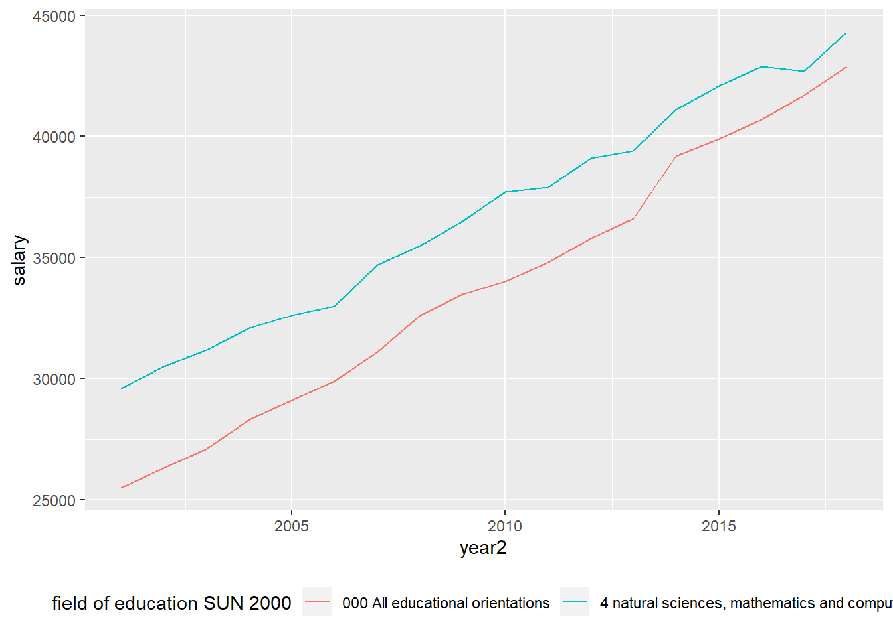
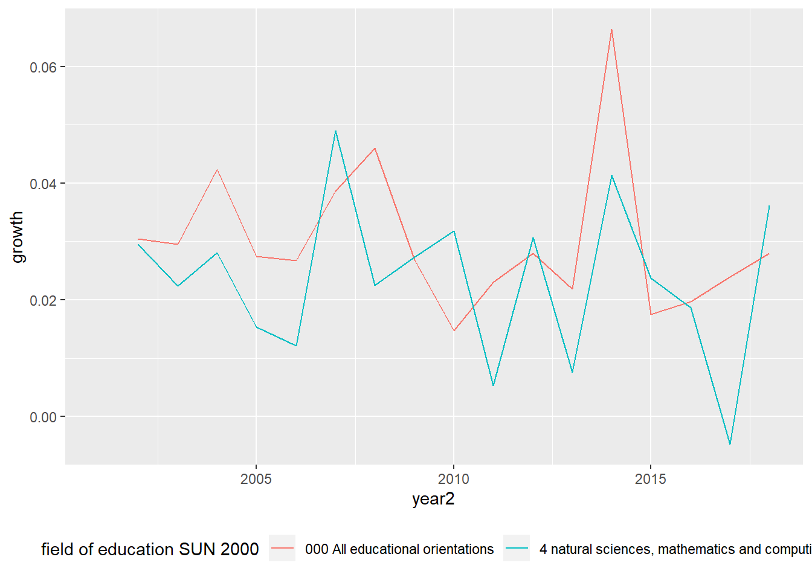

Chapter 4 Natural sciences
Average monthly pay, pay dispersion etc., non-manual workers private sector (SLP) by educational orientation SUN 2000 and sex. Year 2001 - 2018
Average monthly pay (total pay), SEK
SUN2000, 4 natural sciences, mathematics and computing
sex, men and women
readfile ("AM0103I6.csv") %>%
ggplot () +
geom_line (mapping = aes(x = year2,y = salary, colour = `field of education SUN 2000`)) +
theme (legend.position = "bottom")

Figure 4.1: Natural sciences
readfile ("AM0103I6.csv") %>%
group_by (`field of education SUN 2000`) %>%
mutate (growth = c (NA, diff(salary)) / salary) %>%
ggplot () +
geom_line (mapping = aes(x = year2, y = growth, colour = `field of education SUN 2000`)) +
theme (legend.position = "bottom") ## Warning: Removed 2 rows containing missing values (geom_path).

Figure 4.2: Natural sciences
readfile ("AM0103I6_2.csv") %>%
group_by (`field of education SUN 2000`) %>%
summarise (tot = tot_dev (salary)) %>%
arrange (desc (tot)) %>%
knitr::kable(
booktabs = TRUE,
caption = 'The average increase in salary for different educations between the years 2001 to 2018.') | field of education SUN 2000 | tot |
|---|---|
| 0 general education | 73.0% |
| 7 health care and nursing, social care | 72.4% |
| 8 services | 69.3% |
| 3 social sciences, law, commerce, administration | 68.5% |
| 000 All educational orientations | 68.2% |
| 6 agriculture and forestry, veterinary medicine | 68.1% |
| 9 unknown | 67.9% |
| 5 engineering and manufacturing | 63.5% |
| 2 humanities and arts | 61.6% |
| 1 teaching methods and teacher education | 59.5% |
| 4 natural sciences, mathematics and computing | 49.7% |